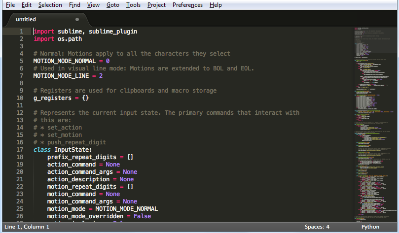

Si la depuración es el proceso de eliminar errores, entonces la programación debe ser el proceso de introducirlos.
Edsger Dijkstra
La experiencia demuestra que el éxito de un curso de programación depende críticamente de la elección de los ejemplos que se utilice.
Niklaus Wirdth
public class PrimerPrograma
{
public static void main(String[] args)
{
System.out.println("¡Mi primer programa!");
}
}
Este código escribe ¡Mi primer programa! en la pantalla.
La línea public class PrimerPrograma declara la clase a la que pertenece el programa
La línea public static void main(String[] args) sirve para indicar el inicio del método principal.
El código System.out.println("¡Mi primer programa!"); es el que realmente escribe en pantalla
Además, el archivo tiene que llamarse obligatoriamente PrimerPrograma.java ya que el nombre del programa (en realidad el nombre de la clase) y el del archivo deben coincidir.
Por último, aunque no es obligatorio, es más que aconsejable que el nombre del programa comience con una letra mayúscula y le sigan letras en minúsculas. Si consta de varias palabras no pueden utilizarse espacios en blanco, por lo que se suelen juntar las palabras poniendo cada inicial de la palabra en mayúsculas.
Éste tipo de reglas no obligatorias sino aconsejables (como por ejemplo el hecho de que las instrucciones interiores a un bloque dejen espacio a su izquierda) producen un código más legible y sobre todo hace que todos los programadores del planeta adoptemos la misma forma de escribir, simplificando el entendimiento del código.
La compilación del código java se realiza mediante el programa javac incluido en el software de desarrollo de Java (el SDK). La forma de compilar es (desde la línea de comandos):
javac archivo.java
Si el programa es ejecutable (sólo lo son si contienen el método main), el código se puede interpretar usando el programa java del kit de desarrollo (que se encuentra en el mismo sitio que javac). Sintaxis:
java archivoClass
Sublime Text es un editor de texto multipropósito que se puede descargar de Internet . Aunque es de pago, permite su uso gratuito.

Ctrl+A Selecciona todo el texto del documento
Ctrl+D Busca la siguiente palabra igual a la selección y la añade
Ctrl+Mayus+D Retira la última palabra de la selección
Fondo diseñado por Kjpargeter / Freepik
Textos de los lenguajes extraidos de la Wikipedia